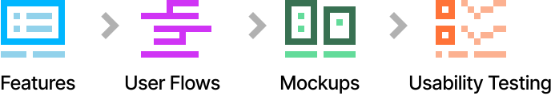

EZLynx
Commercial Insurance Certificates
Certificates are proof of insurance that a vendor can bring to a place of work to show that they are covered for any accidental damages that might occur in the course of doing their business. Most businesses require an insurance certificate from vendors before they're allowed to do any work.
For an insurance agent, keeping of all the active, expired, and expiring certificates for their hundreds of customers can be a monumental task. That's where the Commercial Insurance Certificate product came in.
By the time I started on this project, I had already built a sizable database of personas and deep domain information on both personal and commercial insurance. I was able to leverage that knowledge to speed up the product design process.

Feature Requests
For this project, I was working with two product managers, Bert* and Bianca*. The list was based on feature requests from interviews with some of our closest customers who had been beta customers and provided excellent feedback over the years. The list of features was too long to ideate on in one go. I worked with Bert and Bianca to prioritize the features and break them up into phases so I could mock them up in phases.
I've included below a sample of the feature requests from our customers and from the product managers.
Workflows
Once we had prioritized the features, I next met with my product managers to go over the features one by one, walk through the scenarios, and map out the flows. I've included a sample of the flows below.
The primary focus for the first phase of this product was getting the agent's customers quick access to their certificates. This process involves aggregating documents, signatures, and more from various sources into a single PDF, and then making it easily available via the customer's preferred method (email, text, or via the Client Center mobile app).

Example Screen
This was one of the more complex projects I've worked on. With each iteration, we would discover another potential roadblock that we had not known about. Insurance workflows are incredibly complex and there are many ways to perform a task. That made designing software to streamline the process very difficult. But I did manage to eventually design a set of screens that would solve most of the use cases.

Usability Testing
Certificates are one of the most important documents that commercial vendors request from their insurance agents. It was very important that we do usability testing with agents to make sure they were happy with the new screens. I aggregated the feedback and shared it with my product managers. We then added it to a backlog to fix in the next round of design and development.
Conclusion
The Commercial Insurance Certificates product was one of the least glamorous products in the EZLynx suite of products. It's a complex product for a very complex process that is buried deep in the insurance agency's set of processes. But for our agent's customers, that certificate was essential for them to to be able to get started on their job and get paid. As a product designer my job is to surface and solve problems for my customers regardless of their complexity. Given the feedback from our beta customers and my product managers, I solved this problem far better than they expected.
So, How can I help you?